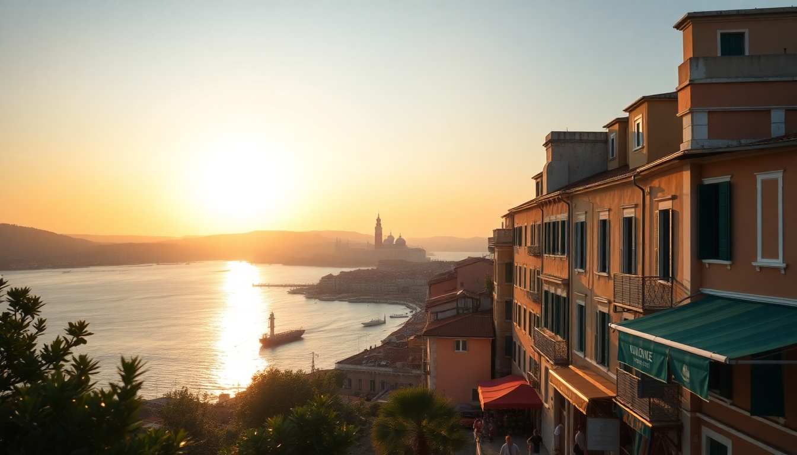

Where to Stay in Venice: Best Neighborhoods for Every Budget

I’ve been to Venice four times now, and each trip taught me something new about where to sleep. The first time I booked a hotel near Rialto because it seemed central — and I regretted it. The crowds were suffocating, and the restaurant prices felt like a tax on confusion. Since then, I’ve learned that the best neighborhood depends entirely on your budget and what you want from the trip. Here’s what I’d tell a friend.
Is San Marco Worth the Splurge?
San Marco is the postcard district — St. Mark’s Square, the Basilica, the Doge’s Palace. If you’re in Venice for the first time and want to roll out of bed into the main sights, this is your zone. But you pay for that convenience. Rooms here are the most expensive in the city, and the streets are packed from 10 AM to sunset. I stayed at Hotel Danieli once on a work trip — gorgeous lobby, but the room was small for the price. For a better value, try Hotel Al Codega, tucked in a quiet courtyard just off the square. You get the location without the street noise.
- Best for: First-timers who want to be steps from St. Mark’s.
- Budget: High. Expect €200-400+ per night for a decent double.
- Watch out: Tourist-trap restaurants on Piazza San Marco. Walk two streets back for better food.
Is Cannaregio the Best Budget Choice?
Cannaregio is my go-to neighborhood. It’s the Jewish Ghetto area, less touristy, with real bakeries and local bars. The Santa Lucia train station drops you right here, so you can walk to your hotel in five minutes without dragging luggage over bridges. I booked a room at Hotel Heureka for €90 a night — clean, simple, and a five-minute walk to the Rialto Bridge. The area feels lived-in. You’ll see Venetians hanging laundry, kids playing in small squares, and bars where an Aperol Spritz costs €4 instead of €12.
- Best for: Budget travelers and train arrivals.
- Budget: Low to mid. €70-150 per night.
- Don’t miss: Osteria Al Bacco for good pasta under €15.
What Makes Dorsoduro Different?
Dorsoduro is the artsy, university neighborhood across the Grand Canal. It’s quieter than San Marco but has a great bar scene thanks to the Accademia di Belle Arti students. The Peggy Guggenheim Collection is here, and the sunsets from the Zattere promenade are the best in Venice. I stayed at Hotel Messner — a family-run place with canal views and a solid breakfast for €120 a night. The vibe is relaxed. You can wander into a gallery, grab a spritz at Café Noir, and feel like you’re living in Venice, not visiting it.
- Best for: Art lovers and couples who want a quieter evening.
- Budget: Mid-range. €100-180 per night.
- Tip: Walk over the Accademia Bridge to San Marco in 10 minutes.
Should You Stay in Castello?
Castello is the largest sestiere (district) and stretches from the Arsenale to the eastern tip of the island. It’s less polished than San Marco, more residential, and has some of the best-value hotels in central Venice. I liked Hotel Diana — basic but spotless, with a garden courtyard, for €85 a night. The main draw is the Biennale Gardens and the relaxed pace. You’re a 15-minute walk from St. Mark’s, but you feel like you’ve escaped the crowd.
- Best for: Travelers who want space and authenticity.
- Budget: Low to mid. €80-140 per night.
- Pro tip: Eat at Trattoria Al Gatto Nero for fresh seafood without the tourist markup.
Is San Polo Too Touristy?
San Polo wraps around the Rialto Bridge and the market. It’s central, lively, and packed with restaurants. I’ve had mixed experiences here. The morning fish market is fantastic, and the produce stalls are a feast for the eyes. But by noon, the alleys are shoulder-to-shoulder. I stayed at Hotel Antiche Figure — right on the Grand Canal, with a view of the Rialto Bridge from the breakfast room. It was €150 a night, and the location was unbeatable for exploring both sides of the canal. If you’re okay with crowds in exchange for convenience, this works.
- Best for: Foodies and market lovers.
- Budget: Mid to high. €120-200 per night.
- Warning: Avoid the restaurants directly on the Rialto Bridge. Walk into Calle dei Saoneri for better options.
What About Santa Croce?
Santa Croce is the district most people skip, and that’s exactly why I like it. It’s on the Grand Canal but away from the main tourist flow. The Piazzale Roma parking lot and the People Mover to the cruise terminal are here, so it’s practical if you’re arriving by car or cruise. I booked Hotel Palazzo once — a converted 16th-century palace with original frescoes for €110 a night. The neighborhood has good bakeries and a local feel. You’re a 10-minute walk to Rialto, but you’ll pass fewer souvenir shops.
- Best for: Car arrivals and cruise passengers.
- Budget: Mid-range. €90-160 per night.
- Don’t miss: Pasticceria Dal Mas for morning croissants.
Should You Stay in Mestre Instead?
Mestre is the mainland suburb connected to Venice by a bridge. It’s not romantic, but it’s cheap. I stayed at Hotel Aaron for €55 a night — modern, clean, and a 10-minute bus ride to Piazzale Roma. If you’re on a tight budget or just need a bed before an early flight, Mestre works. But you lose the Venice atmosphere. You’ll spend 30 minutes commuting each way, and the buses can be packed in summer. I’d only recommend it if you’re really stretching a budget.
- Best for: Extreme budget travelers and late arrivals.
- Budget: Low. €40-80 per night.
- Trade-off: You save money but miss the evening magic of Venice.
FAQ
Is it better to stay near the train station or near St. Mark’s Square? If you arrive by train, stay near Santa Lucia station in Cannaregio. You avoid dragging luggage over bridges. If you’re flying in and taking a water taxi, St. Mark’s is fine — but expect higher prices. I always choose Cannaregio for the balance of convenience and value.
Which neighborhood is safest in Venice? Venice is one of the safest cities in Italy. I’ve walked home at midnight in every district — Cannaregio, Dorsoduro, Castello — without issue. Pickpocketing happens in crowded areas near Rialto and San Marco, so keep your wallet in a front pocket. No neighborhood is dangerous.
Can I stay in Mestre and commute to Venice daily? Yes, but I wouldn’t for a short trip. The bus takes 20 minutes each way, and the last bus from Venice leaves around midnight. For a 3-day visit, the time lost commuting isn’t worth the savings. For a week-long trip with a tight budget, Mestre is a reasonable choice.
Conclusion
- San Marco is for splurging on location, but expect crowds and high prices.
- Cannaregio is my top pick for budget-conscious travelers who still want to be central.
- Dorsoduro offers a relaxed, artsy vibe with good mid-range hotels.
- Castello gives you space and authenticity for less money.
- San Polo is great for food lovers who don’t mind the midday crush.
- Santa Croce is practical for car or cruise arrivals.
- Mestre works only if you’re on a very tight budget and don’t mind commuting.